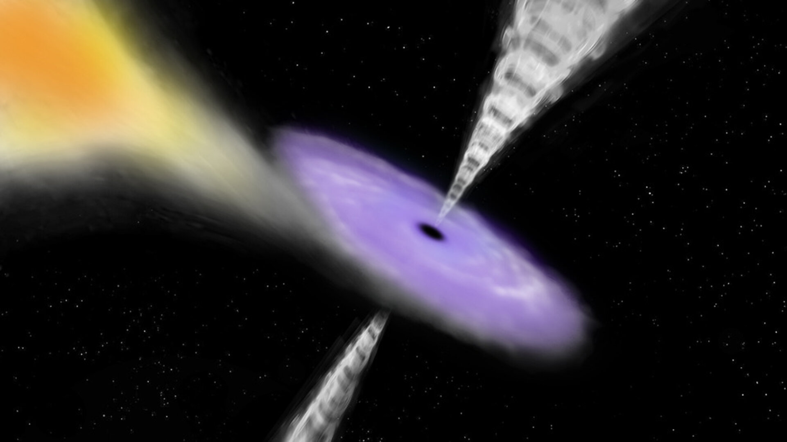
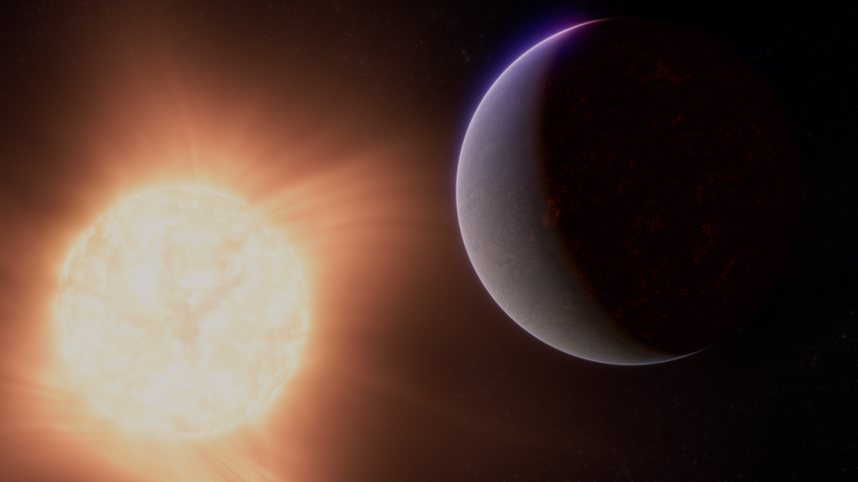
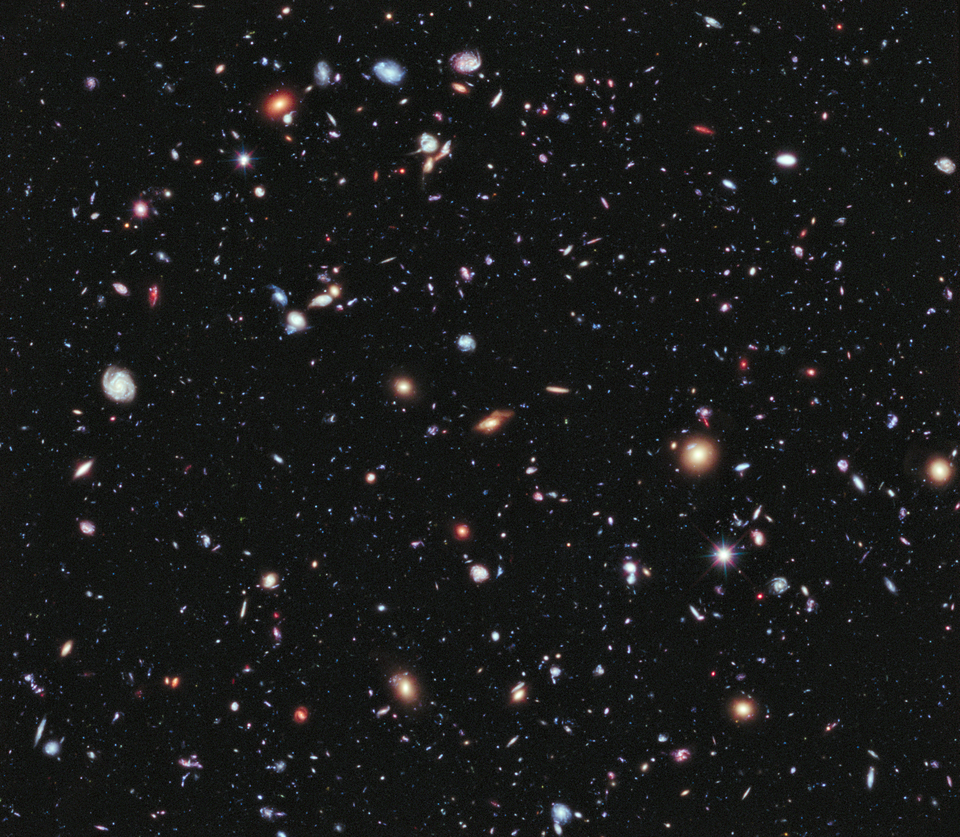
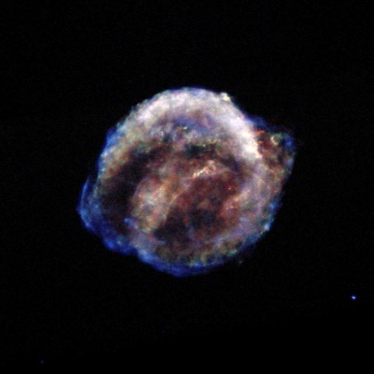

AstroSpace
AstroSpace
Capturan nuevos detalles sobre los potentes chorros de plasma en agujeros negros supermasivos
Un radiotelescopio de alcance global desvela cómo los campos magnéticos impulsan partículas a velocidades cercanas a la de la luz.
Enterate de los descubrimientos más recientes, misiones espaciales y novedades del cosmos.

Un radiotelescopio de alcance global desvela cómo los campos magnéticos impulsan partículas a velocidades cercanas a la de la luz.

Nuevas mediciones espectroscópicas revelan indicios clave sobre la composición atmosférica de un planeta ubicado a 120 años luz de la Tierra.

Observaciones del universo temprano revelan estructuras de estrellas masivas congregadas antes de lo que dictaban las teorías tradicionales.

Análisis de datos de sondas orbitales sugieren que el satélite de Saturno mantiene procesos hidrotermales más complejos de lo pensado.

Astrónomos registran cambios drásticos en el brillo de una supergigante roja justo antes de colapsar, ofreciendo pistas sobre su destino final.

La fusión de dos gigantescas galaxias espirales canaliza enormes cantidades de gas hacia el centro, despertando a un agujero negro durmiente.

El sistema de alta eficiencia energética promete recortar drásticamente los tiempos de viaje hacia los asteroides más alejados del sistema solar.

El evento registrado por observatorios de ondas gravitacionales desafía los límites conocidos sobre cómo evolucionan las estrellas masivas.